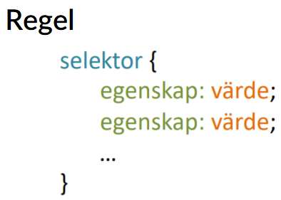

Regler i CSS
En regel är en bit kod som specificerar hur någon del av en hemsida ska se ut. Den består av en selektor och en eller flera egenskaper och värde par.
En regel är en bit kod som specificerar hur någon del av en hemsida ska se ut. Den består av en selektor och en eller flera egenskaper och värde par.
CSS kod består av flera regler som bygger på varandra i en kaskad. Med det menas att stilen som bestämdes tidigt i dokumentet till ett element inte skrivs över när en annan regel ändrar på samma element om den inte ändrar exakt samma sak. Den tidigare stilen skickas alltså vidare och kombineras med den nya regeln.